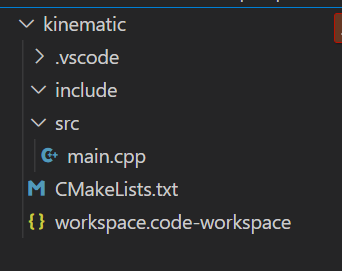
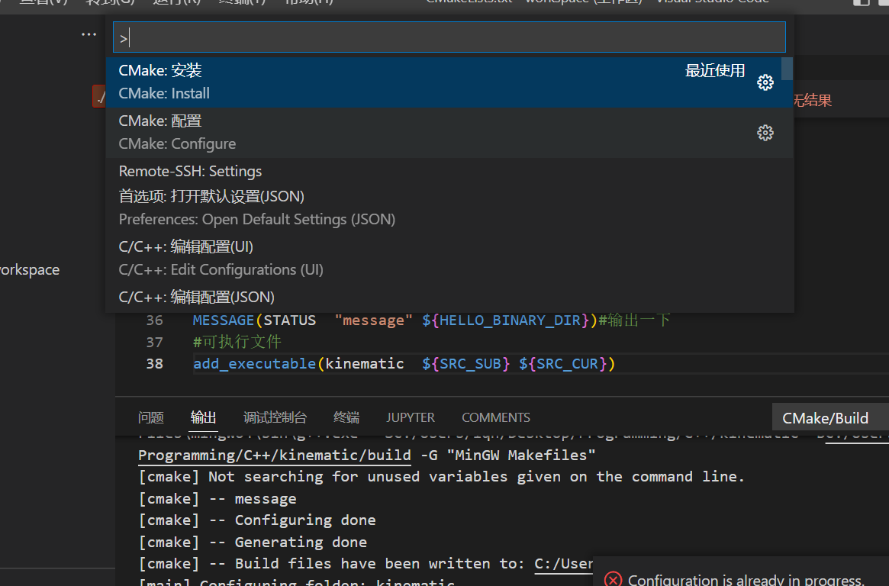

Cmake 使用
Cmake
Windows
创建新项目

main 函数内容如下
#include <iostream>
#include <stdio.h>
#include <windows.h>
int main()
{
std::cout<<"Hello world"<<std::endl;
system("pause");
return 0;
}
Cmakelists.txt内容如下
cmake_minimum_required(VERSION 3.5)
project(kinematic)#项目名称
# set(CMAKE_BUILD_TYPE Debug)
# SET(CMAKE_BUILD_TYPE Release)
set(CMAKE_C_STANDARD 11)
#编译级别和优化
if(CMAKE_BUILD_TYPE AND (CMAKE_BUILD_TYPE STREQUAL "Debug"))
set(CMAKE_C_FLAGS_DEBUG "${CMAKE_C_FLAGS_DEBUG} -Wall -O0")
message("Debug mode:${CMAKE_C_FLAGS_DEBUG}")
#add_executable(test_debug ${src_dirs})
elseif(CMAKE_BUILD_TYPE AND (CMAKE_BUILD_TYPE STREQUAL "Release"))
set(CMAKE_C_FLAGS_RELEASE "${CMAKE_C_FLAGS_RELEASE} -Wall -O3")
message("Release mode:${CMAKE_C_FLAGS_RELEASE}")
#add_executable(test_release ${src_dirs})
else()
message("else:${CMAKE_BUILD_TYPE}")
message("else:${CMAKE_C_FLAGS_RELEASE}")
#add_executable(test_release ${src_dirs})
endif()
# Default to C 11
if(CMAKE_C_STANDARD)
set(CMAKE_C_STANDARD 11)
endif()
# Default to C++14
if(NOT CMAKE_CXX_STANDARD)
set(CMAKE_CXX_STANDARD 14)
#set(CMAKE_CXX_STANDARD 17)
set(CMAKE_CXX_STANDARD_REQUIRED ON)
endif()
#检查安全性
if(CMAKE_COMPILER_IS_GNUCXX OR CMAKE_CXX_COMPILER_ID MATCHES "Clang")
add_compile_options(-Wall -Wextra -Wpedantic)
endif()
#系统检测，备用
if(WIN32)
endif()
if(UNIX AND NOT APPLE AND NOT ANDROID)
endif()
if(APPLE)
endif()
#库路径
include_directories(include)
#源代码路径
aux_source_directory(src SRC_SUB)
aux_source_directory(. SRC_CUR)
MESSAGE(STATUS "message" ${HELLO_BINARY_DIR})#输出一下
#可执行文件
add_executable(kinematic ${SRC_SUB} ${SRC_CUR})
打开vscode

选择Cmake Configure
该操作实质等同于：
mkdir build
cd build
cmake -G "MinGW Makefiles" ../
如果正常的话当前目录下会多个build文件夹
cd 进入 build文件夹，输入
cmake .
mingw32-make.exe
完成编译。
vscode调试cmake
在工作空间的.vscode文件夹下，创建launch.json和tasks.json
参考如下：
launch.json
{
// 使用 IntelliSense 了解相关属性。
// 悬停以查看现有属性的描述。
// 欲了解更多信息，请访问: https://go.microsoft.com/fwlink/?linkid=830387
"version": "0.2.0",
"configurations": [
{
"name": "g++.exe build and debug active file",
"type": "cppdbg",
"request": "launch",
"program": "${workspaceFolder}\\build\\kinematic.exe",//需要改成自己的可执行文件
"args": [],
"stopAtEntry": false,
"cwd": "${workspaceFolder}",
"environment": [],
"externalConsole": true,
"MIMode": "gdb",
"miDebuggerPath": "C:\\Program Files\\mingw64\\bin\\gdb.exe",
"setupCommands": [
{
"description": "为 gdb 启用整齐打印",
"text": "-enable-pretty-printing",
"ignoreFailures": true
}
],
//需要与task.json的label名称对应
"preLaunchTask": "Build my project"
}
]
}
- program: 要调试的可执行程序的路径，里边可以使用一些宏，宏的外部加 ${} 表示取值
- ${fileDirname}：文件目录的名字，launch.json 对应的目录名就是 .vscode
- ${fileBasenameNoExtension}：不带扩展名的文件名，文件名是 main 函数对应的那个文件
- ${workspaceFolder}：工作区目录
- preLaunchTask：调试项目前要执行的任务，C/C++: g++.exe 生成活动文件是 tasks.json 中的一个任务
tasks.json
{
"version": "2.0.0",
"options": {
"cwd": "${workspaceFolder}/build/" //进入build目录
},
"tasks": [
{
"label": "cmake",
"type": "shell",
"command": "cmake ",
"args": [
"-DCMAKE_BUILD_TYPE=Debug",//可改为Release
".."
]
},
{
"label": "make",
"group":{
"kind":"build",
"isDefault":true
},
"command": "mingw32-make.exe",//or make.exe
"args":[
]
},
{
"label":"Build my project",
"dependsOn":[
"cmake",
"make"
]
}
]
}
c_cpp_properties.json 这个文件可有可无，主要便于编程时vscode识别头文件，不会被标红
{
"configurations": [
{
"name": "Win64",
"includePath": [
"${workspaceFolder}/**",
"C:/Program Files/Opencv/opencv-4.6.0-src/build/x64/mingw/install/include",
"C:/Program Files/Opencv/opencv-4.6.0-src/build/x64/mingw/install/include/opencv2"
],
"defines": [
"_DEBUG",
"UNICODE",
"_UNICODE"
],
"compilerPath": "C:\\Program Files\\mingw64\\bin\\gcc.exe",
"cStandard": "gnu17",
"cppStandard": "gnu++20",
"intelliSenseMode": "windows-gcc-x64"
}
],
"version": 4
}